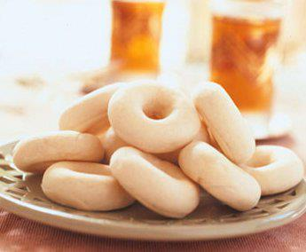

Ingredient
- 1 kg of flour
- 400 gr of butter
- 450 gr rose water
- 500 gr fine almond powder
- 200 gr of icing sugar
Preparation steps
- Preparation of the Dough: Mix the flour with the softened butter (at room temperature).
- Add 350 g of rose water and knead until a smooth dough is obtained. Leave to rest for a few hours.
- Preparation of the almond filling: Combine the almond powder and the sugar together then incorporate 100 g of rose water in order to obtain a homogeneous texture.
- Roll out the dough in a thin layer (1mm thick) using a rolling pin.
- Form the stuffing into small sausages (5cm).
- Roll up the stuffing with the dough.
- Assemble the two ends to form a round washer.
- Bake at 180 ° for 10 minutes.